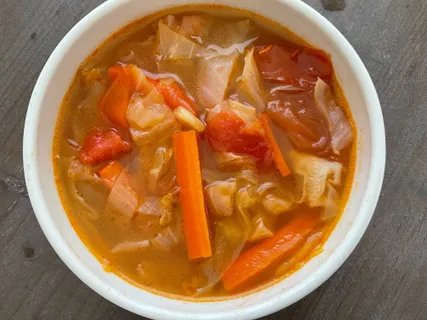
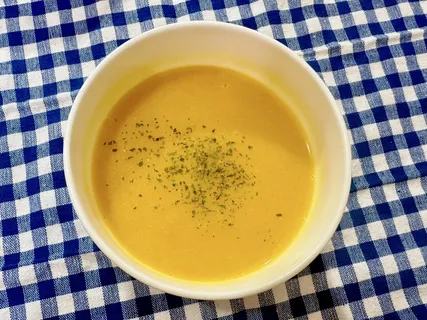
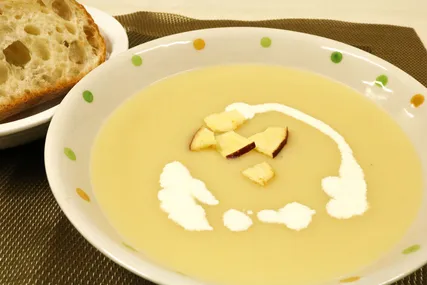

湯品 Soups
Soups
スープ
溫暖養身的湯品選擇，精選優質食材慢熬而成。
A comforting selection of nourishing soups, slowly simmered with carefully chosen, high-quality ingredients.
厳選した上質な食材を使用し、 じっくりと時間をかけて煮込んだ、 体にやさしく温まるスープをご用意しております。
鄉村蔬菜濃湯
Country-Style Vegetable Soup
田舎風野菜のポタージュ

99元 NT$99
以番茄為基底，加入多種時令蔬菜熬煮而成的濃湯。它結合了番茄的酸甜清爽和多種蔬菜的豐富營養，是一種健康且風味飽滿的湯品。
A hearty soup made with a tomato base and slowly simmered with a variety of seasonal vegetables. Balancing the refreshing sweet-and-tart notes of tomatoes with the rich nutrition of vegetables, this soup is both wholesome and full of flavor.
トマトをベースに、 旬の野菜をたっぷり加えて煮込んだ濃厚なスープ。 トマトの爽やかな酸味と甘み、 野菜の栄養をバランスよく味わえる、 ヘルシーで満足感のある一品です。
南瓜濃湯
Pumpkin Cream Soup
かぼちゃのポタージュ

109元 NT$109
南瓜濃湯是一種世界各地都非常普遍且受歡迎的湯品，尤其在秋季和冬季。它以其溫暖的色澤、絲滑的口感以及天然的香甜而聞名，是一道兼具營養和療癒效果的料理。
A globally beloved soup, especially popular during the autumn and winter seasons. Known for its warm color, silky texture, and naturally sweet flavor, this soup offers both nourishment and comforting satisfaction.
世界中で親しまれている定番スープで、 特に秋冬の季節に人気があります。 温かみのある色合い、 なめらかな口当たり、 自然な甘みが特徴の、 栄養価と癒し効果を兼ね備えた一皿です。
蘋果濃湯
Apple Cream Soup
りんごのポタージュ

109元 NT$109
蘋果濃湯是一道獨特且風味令人驚喜的西式湯品。與傳統的南瓜或番茄濃湯不同，它將水果的天然甜味和清爽融入濃郁的湯底中，創造出層次豐富、口感絲滑的味覺體驗。
Apple cream soup is a unique and delightfully surprising Western-style soup. Unlike traditional pumpkin or tomato soups, it blends the natural sweetness and refreshing notes of fruit into a rich, creamy base, creating a layered and silky flavor experience.
りんごのポタージュは、個性的で驚きのある西洋風スープです。 伝統的なかぼちゃやトマトのスープとは異なり、果物の自然な甘みと爽やかさを濃厚なスープに融合させ、奥行きのあるなめらかな味わいを生み出します。